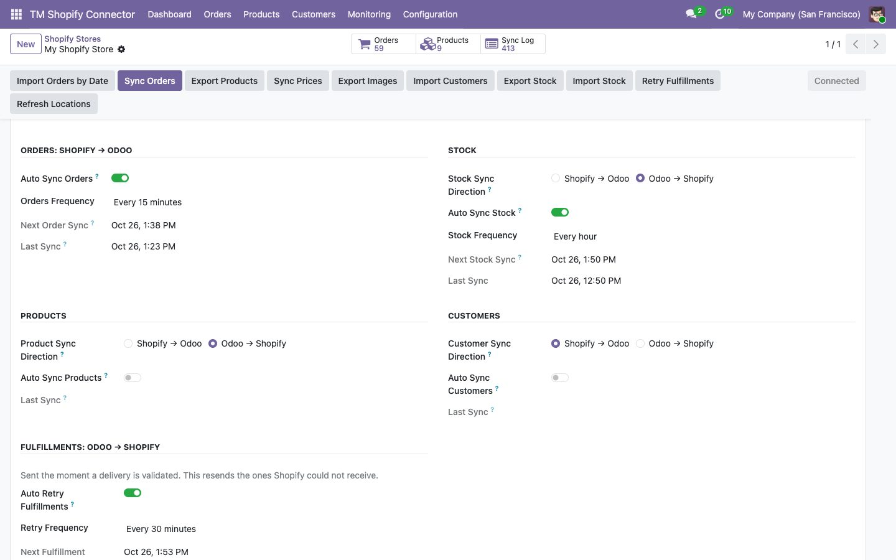
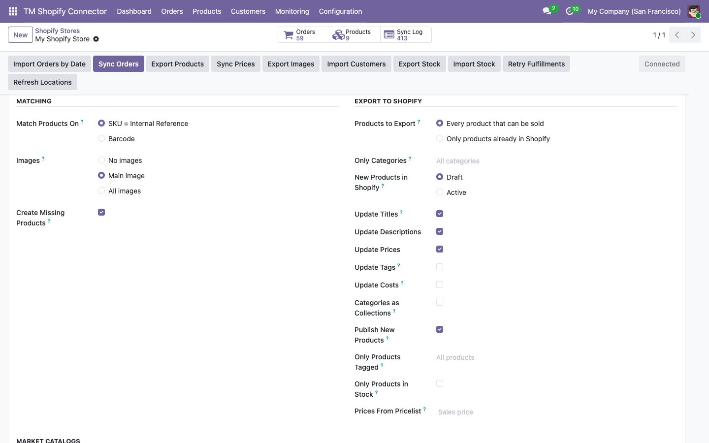
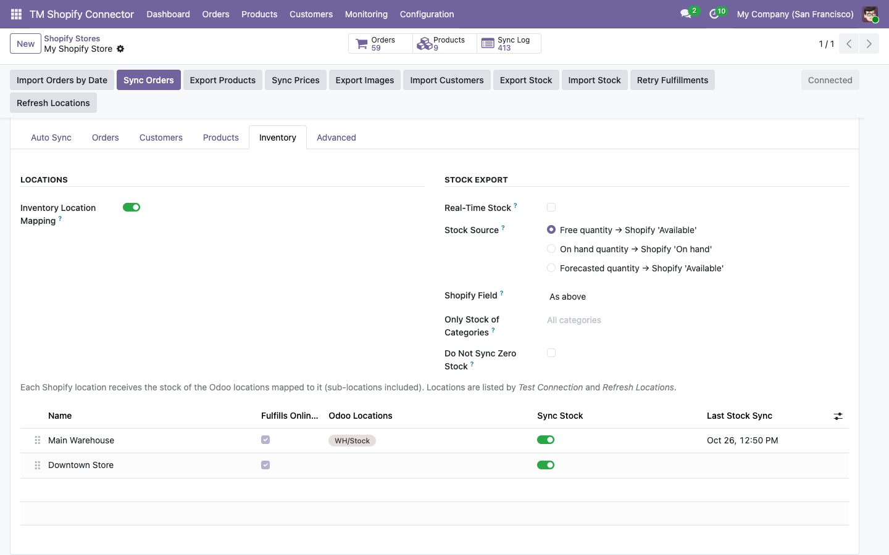
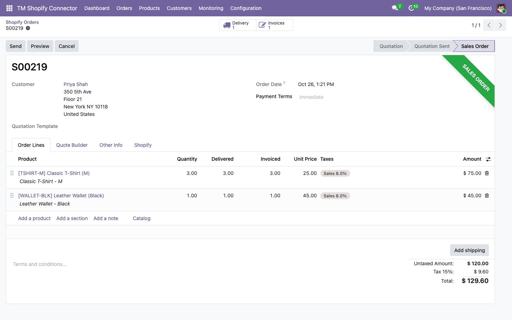
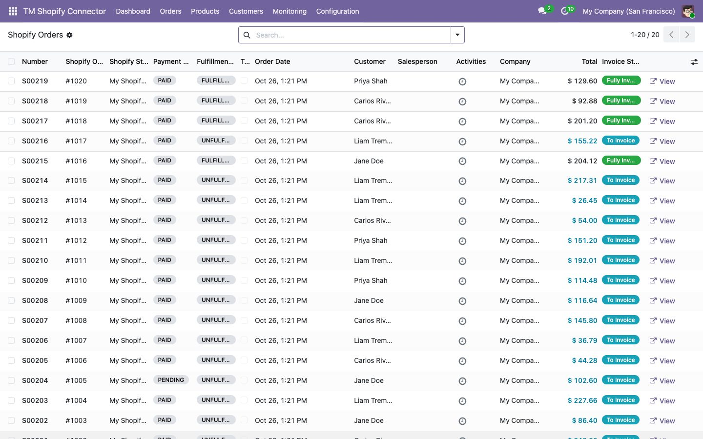
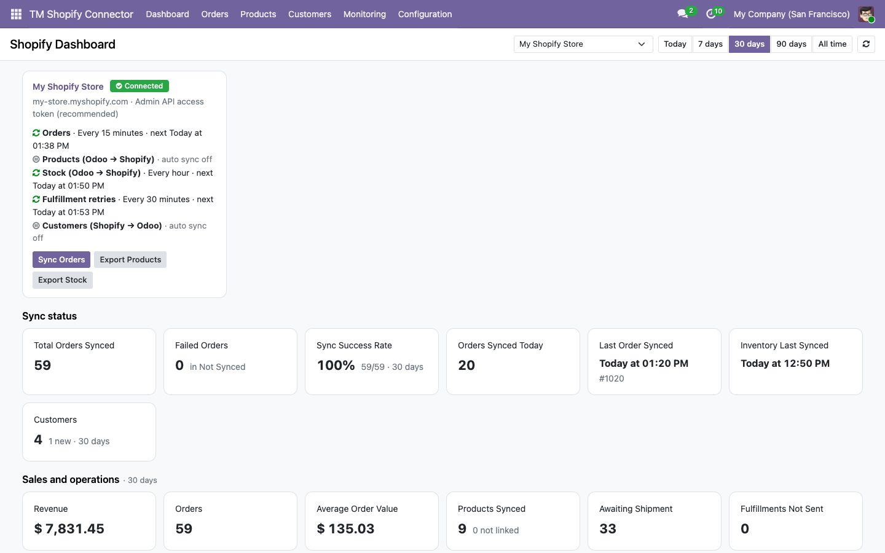
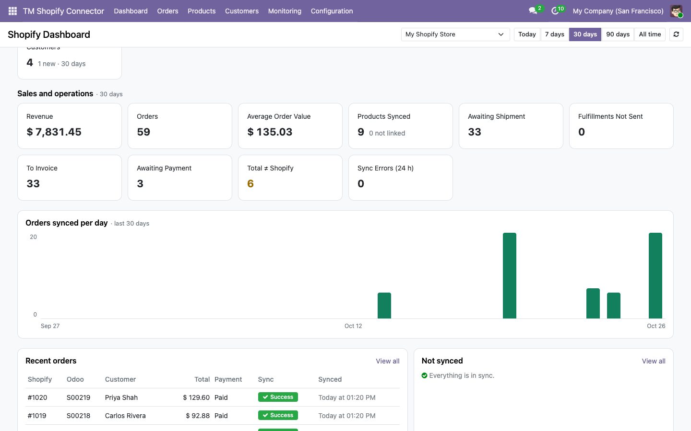

Shopify Odoo Connector Help
How the module connects your Shopify store to Odoo, in plain words. Pick a topic below, or press / to search. Prefer paper? Download the guide as a PDF.
User guide for Odoo 16, 17, 18, 19 and 20, by Techmarbles. Support: support@techmarbles.com. Online, with search: https://vi-061993.github.io/shopify-odoo-connector-docs/
Contents
- Getting started
- Buying, licence & updates
- Product sync
- Inventory sync
- Order sync
- Invoices, payments & refunds
- Fulfillment & deliveries
- Customer sync
- Taxes & pricelists
- Several stores & companies
- Shopify permissions
- Dashboard
- Monitoring & data checks
- Troubleshooting
- Before you go live
- FAQ
- Security & privacy
- Release notes
Getting started
This topic takes you from installing the module to your first working sync. It explains the words the module uses, what you need in Odoo and Shopify, the three ways to connect a store, and where to turn on each automatic sync.
What the module does
Shopify Odoo Connector (TM) is an Odoo module. It runs inside your own Odoo and talks straight to Shopify's Admin API. No server sits in between, so your data goes from Shopify to your Odoo and back, and nowhere else.
It can:
- Import Shopify orders as Odoo sale orders, with the customer, lines, discounts, shipping, taxes, duties and tips.
- Create invoices and payments, and turn Shopify refunds into credit notes and returns.
- Send deliveries back to Shopify as fulfillments with the carrier and tracking number, and the other way round.
- Sync products, variants, prices, costs, images, tags and categories, in the direction you choose.
- Keep stock levels the same, per location, on a schedule or in real time.
- Sync customers with their addresses, tags, note and tax ID.
- Send paid, cancelled and refunded statuses from Odoo to Shopify.
- Show it all on a dashboard, with a list of records that did not sync and a button to retry them.
Each part has its own settings and its own switch on the store form. Nothing syncs on a schedule until you turn it on.
Key words
| Word | What it means |
|---|---|
| Store | One Shopify shop connected to Odoo. You set it up in Shopify Odoo Connector (TM) > Configuration > Stores. You can connect several. |
| Shop domain | The shop's myshopify.com address, for example my-store.myshopify.com. Shopify shows it in Settings > Domains. |
| Access token | A secret code from Shopify that lets Odoo use your shop's Admin API. Custom app tokens start with shpat_. |
| Sync direction | Which way data flows. Shopify → Odoo means Shopify is the source and Odoo is updated. Products, stock and customers each have their own direction. Orders always come from Shopify. |
| Product matching | How the module knows that a Shopify variant and an Odoo product are the same item: by SKU (the Odoo Internal Reference) or by barcode. |
| Location mapping | Pairs each Shopify location with one or more Odoo stock locations, so stock is synced per location. |
| Manual sync | A sync you start with a button on the store, such as Sync Orders or Export Stock. Buttons work whether automatic sync is on or off. |
| Automatic sync | A sync that runs on its own, at the frequency you pick. Odoo's scheduler checks every 5 minutes which syncs are due. |
| Real-time stock | Stock sent to Shopify within seconds of a stock move in Odoo, instead of at the next scheduled run. |
| Not Synced | The list of orders and products that failed, with the error and a Retry button. |
| Skipped order | A Shopify order your filters left out on purpose (start date, status or tag). It is listed so you can import it anyway. |
Before you start
Odoo:
- Odoo 16, 17, 18, 19 or 20, Community or Enterprise. Buy the module for the version you run.
- Odoo on your own server or on Odoo.sh. Odoo Online (the odoo.com SaaS) does not run third-party modules.
- An Odoo administrator to install the module, and a user with the Sales: Administrator right to configure stores. Shopify credentials are only shown to Settings administrators.
Odoo apps, installed for you with the module:
| Odoo app | Needed for |
|---|---|
| Sales | Sale orders from Shopify orders. |
| Inventory | Stock, warehouses, locations, deliveries and returns. |
| Invoicing (or Accounting) | Invoices, payments, journals, taxes and credit notes. |
| Delivery | Carriers and tracking numbers on deliveries. |
Shopify:
- A Shopify store on any plan.
- Permission to create an app for the store: the store owner, or a staff account allowed to develop apps.
Try the module on a copy of your Odoo database first. Every import can be limited by date or tag, so a first test touches only a few records.
Install the module
- Buy Shopify Odoo Connector (TM) on the Odoo Apps Store for your Odoo version and download the zip file.
- Unzip it into a folder of your Odoo addons path. You get a folder called
tm_shopify_connector. On Odoo.sh, add that folder to your repository and push. - Restart Odoo.
- In Odoo, open Apps, click Update Apps List (developer mode), search for Shopify and click Activate.
- A new Shopify Odoo Connector (TM) menu appears on the home screen.
The module needs no extra Python package and no outside service. Your Odoo must be able to reach *.myshopify.com over HTTPS.
Connect your Shopify store
Open Configuration > Stores, click New, give the store a name and pick one of three ways to connect.
| Connection method | When to use it |
|---|---|
| Admin API access token (recommended) | You create a custom app in your own Shopify admin and paste its token. Nothing is published, and nothing goes through a third party. |
| Client ID and secret | You created an app in the Shopify Dev Dashboard and installed it on this store. Odoo requests and renews its own access token every day. |
| Your own Shopify app (OAuth) | An app you or your agency own. You approve it on Shopify's install page and the token comes straight to Odoo. |
Admin API access token
- In your Shopify admin, open Settings > Apps and sales channels > Develop apps and create an app. It is private to your store.
- Under Configuration > Admin API scopes, tick the scopes listed in Shopify permissions.
- Click Install app, then reveal and copy the Admin API access token. Shopify shows it only once.
- In Odoo, choose Admin API access token, paste the token, fill in the Shop Domain and save.
- Click Test Connection.
If your Shopify admin no longer lets you create apps under Develop apps, create the app in the Shopify Dev Dashboard and use Client ID and secret instead.
Client ID and secret
- In the Shopify Dev Dashboard, create an app with the scopes in Shopify permissions and install it on this store. The store must belong to the same organization.
- In Odoo, choose Client ID and secret, paste the app's Client ID and Client secret, fill in the Shop Domain and save.
- Click Test Connection. Odoo gets an access token and renews it every day; you do nothing more.
Your own Shopify app (OAuth)
- In Odoo, choose Your own Shopify app and save. Copy the Redirect URL the form shows.
- In your app's settings (Dev Dashboard or Partner Dashboard), add that URL to the allowed redirection URLs and give the app the scopes in Shopify permissions.
- Paste the app's Client ID and Client secret in Odoo, fill in the Shop Domain and save.
- Click Authorize on Shopify and approve. Shopify sends you back to Odoo, connected.
For OAuth, Odoo's web.base.url must be the public address Shopify can reach (for example https://erp.mycompany.com). A localhost address cannot receive Shopify's answer.
What Test Connection does
It logs in to Shopify and reads your shop: its name, currency, whether its prices include tax, and its locations. When it works, the store shows Connected and its Shopify locations appear on the Inventory tab. When it fails, the store shows Error and the message says why: a wrong shop domain, a wrong or revoked token, or a missing scope.
Store defaults
| Setting | What it does |
|---|---|
| Company | The Odoo company of the store's orders, invoices and stock. Shown when you have several companies. |
| Warehouse | The warehouse that ships Shopify orders. Also the default stock source for the first location. |
| Sales Team | Set on imported sale orders. |
| Salesperson | Set on imported sale orders. |
Your first sync
Do it in this order. Each step relies on the one before.
- Products. On the Products tab, choose how to match products (SKU or barcode). If Shopify holds your catalogue, set the product direction to Shopify → Odoo and click Import Products. If Odoo holds it, set Odoo → Shopify and click Export Products. See Product sync.
- Check the links. Open Products in the module menu: each Shopify variant shows its Odoo product. Monitoring > Data Checks lists products without SKU or barcode and duplicates.
- Stock. On the Inventory tab, map your Shopify locations to Odoo locations, choose the direction and click Export Stock or Import Stock once. See Inventory sync.
- Orders. On the Orders tab, set Import Orders Since to today, choose your invoicing options and click Sync Orders. Place a test order in Shopify and click Sync Orders again. See Order sync.
- Customers. Only if you want customers synced on their own: customers on orders are created with the order anyway. See Customer sync.
Import Products, Import Orders by Date and Import Customers open a small window where you choose All or Updated between two dates. Use a short range for your first test.
Turn on automatic syncs
All automatic syncs are on the store's Auto Sync tab. Tick the switch, pick a frequency and save. The next run time is shown under each one.
| What | Switch | Frequencies |
|---|---|---|
| Orders, Shopify → Odoo | Auto Sync Orders | Every 5, 15 or 30 minutes, every 1, 2, 6 or 12 hours, every day or every week. |
| Stock | Auto Sync Stock | Same choices as orders. Real-time stock (Odoo → Shopify) is on the Inventory tab. |
| Products | Auto Sync Products | Every 6 or 12 hours, every day or every week. |
| Customers | Auto Sync Customers | Every 1, 2, 6 or 12 hours, every day or every week. |
| Fulfillment retries, Odoo → Shopify | Auto Retry Fulfillments | Every 30 minutes, every 1, 2, 6 or 12 hours, every day or every week. |
Fulfillments, paid statuses, cancellations and refunds from Odoo are sent at the moment they happen in Odoo. The retry job only resends the ones Shopify could not receive.

How the module is laid out
| Menu | What you do there |
|---|---|
| Dashboard | Each store's connection and sync jobs, order and stock figures, a daily chart, recent orders and what did not sync. See Dashboard. |
| Orders | Every sale order that came from Shopify, with its Shopify payment and fulfillment status. |
| Products | Every Shopify variant, its Odoo product, Shopify price, Odoo on hand and available quantities, and its stock switch. |
| Customers | Every Shopify customer linked to an Odoo contact. |
| Monitoring | Not Synced, Skipped Orders, Sync Log and Data Checks. See Monitoring & data checks. |
| Configuration | Stores and Locations. Sales administrators only. |
The store form has a button bar at the top for every manual sync, and six tabs:
| Tab | What it holds |
|---|---|
| Auto Sync | Directions and frequencies of orders, stock, products, customers and fulfillment retries. |
| Orders | Which orders to import, sale order options, lines, taxes, tag rules, tax and shipping mapping, invoicing, journal rules, statuses to Shopify, order edits, refunds and fulfillment. |
| Customers | Customer sync options in each direction. |
| Products | Matching, images, import and export options, and market catalogs. |
| Inventory | Location mapping, stock export and import options, and the Shopify locations. |
| Advanced | The scopes Shopify granted and the token's expiry. Settings administrators only. |
Disconnect or change the store
- Disconnect on the store form sets it to Not connected and stops its scheduled syncs. Tokens Odoo obtained itself (Client ID and secret, OAuth) are forgotten; a pasted access token stays in the field so you can reconnect. Orders, products and contacts already in Odoo stay.
- To cut Shopify access completely, uninstall the app in Shopify admin > Apps. Its token stops working at once.
- To use another token or app, disconnect, choose the method again, enter the new credentials and click Test Connection.
- To pause one store without losing its settings, untick its automatic syncs, or archive it.
Do not point an existing store at a different Shopify shop. Its links (products, customers, locations) belong to the first shop. Create a new store for the other shop instead.
Troubleshooting
| What you see | What to do |
|---|---|
| Test Connection: invalid token or 401 | The token was revoked or mistyped. Copy it again from Shopify (or reinstall the custom app to get a new one) and paste it. |
| Test Connection: shop not found | Use the myshopify.com address, not your own domain. The store name alone also works. |
| Access denied for a field or query | A scope is missing. Add it in the Shopify app, install the new version (or click Authorize on Shopify again) and test again. See Shopify permissions. |
| Nothing happens on schedule | Check the switch on the Auto Sync tab and that Odoo's scheduled actions run (on your own server, Odoo needs at least one cron worker). |
More cases are in Troubleshooting.
Need help
Write to support@techmarbles.com with your Odoo version, the store's name and, if you can, the message from Monitoring > Sync Log. Bug fixes and configuration help are included with the purchase.
Buying, licence & updates
Where to buy the module, what the price covers, which Odoo versions it runs on and how updates reach you.
What it does
Shopify Odoo Connector (TM) is a paid module on the Odoo Apps Store, published by Techmarbles. You pay once per Odoo version. There is no monthly fee and no per-order charge, and no Techmarbles server sits between Shopify and your Odoo.
Price and what it includes
| Item | Details |
|---|---|
| Price | 390 USD, paid once on the Odoo Apps Store for one Odoo version. |
| Licence | Odoo Proprietary License v1.0 (OPL-1). You may use and adapt the module for your business; you may not resell or publish it. |
| Stores | Connect as many Shopify stores as you like to the same Odoo. |
| Support | Bug fixes and configuration help by email at support@techmarbles.com. |
| Updates | New versions for the Odoo version you bought, downloaded from the Apps Store. |
Odoo versions
| Odoo | Editions | Hosting |
|---|---|---|
| 16, 17, 18, 19, 20 | Community and Enterprise | Your own server or Odoo.sh. Not Odoo Online (odoo.com SaaS), which does not run third-party modules. |
Every version has the same features. The module's version number starts with the Odoo version, for example 19.0.1.1.9 for Odoo 19.
Moving to a newer Odoo version? Buy the module for the new version on the Apps Store. Odoo's upgrade service moves your data; the module's stores, links and settings come along.
Update the module
- Download the new version from your Apps Store purchases.
- Replace the
tm_shopify_connectorfolder in your addons path with the new one (on Odoo.sh, commit and push it). - Restart Odoo.
- In Apps, open the module and click Upgrade (or start Odoo with
-u tm_shopify_connector).
Update on a copy of your database first if you changed the module's code. Your stores and settings are kept by the upgrade.
Troubleshooting
| What you see | What to do |
|---|---|
| The module is not in the Apps list | Check the folder is in a directory of your addons_path, restart Odoo and click Update Apps List in developer mode. |
| "Module not installable" or a version error | The zip is for another Odoo version. Download the one that matches your Odoo. |
Product sync
Products, variants, prices, costs, images, tags and categories between Shopify and Odoo. One side is the master: you choose which.
What it does
- Shopify → Odoo: Shopify products are imported and linked to Odoo products. Missing ones can be created, with their variants, SKU, barcode, price, weight and category. Existing ones can be updated.
- Odoo → Shopify: Odoo is the master. Its products are created and updated in Shopify, including title, description, options, variants, SKU, barcode, price, cost, weight, tags and images.
Either way, every Shopify variant is linked to one Odoo product. The link is what stock, prices and orders use afterwards. You see all links in the module's Products menu.
Before you start
- Give every product a unique SKU (Odoo's Internal Reference) or a unique barcode, on both sides. Products are matched on one of the two.
- Check Monitoring > Data Checks for products without SKU, without barcode, and duplicate SKUs, in Odoo and in Shopify. Fix these first.
- Products created in Odoo from Shopify are storable when Shopify tracks their inventory, consumable otherwise.
How to set it up
- On the store's Products tab, set Match Products On to SKU or barcode.
- On the Auto Sync tab, set Product Sync Direction.
- Set the import or export options below and save.
- Click Import Products or Export Products on the store. Choose All, or Updated between two dates.
- Check Products: each Shopify variant shows its Odoo product.
- When it looks right, tick Auto Sync Products on the Auto Sync tab.
If both sides already have the same products, untick Create Missing Products (import) or set Products to Export to Only products already in Shopify (export) for the first run. The module then only links what matches and creates nothing.
Settings explained
Matching
| Setting | What it does |
|---|---|
| Match Products On | SKU = Internal Reference or Barcode: how Shopify variants are linked to existing Odoo products. Orders use the same rule. |
| Images | No images, Main image or All images: copied when a product is created on the other side, and by the image buttons. Extra images in Odoo need the eCommerce app (product gallery). |
| Create Missing Products | Product import: create the Odoo product when a Shopify variant matches none. Order sync has its own option on the Orders tab. |
Import from Shopify
| Setting | What it does |
|---|---|
| Update Sales Prices | Copy Shopify prices onto products that already exist in Odoo. |
| Update Titles | Copy Shopify titles onto existing Odoo products. |
| Update Descriptions | Copy Shopify descriptions onto existing Odoo products. |
| Update Tags | Add Shopify tags to existing Odoo products. Tags are never removed. |
| Update Costs | Copy Shopify's cost per item onto existing Odoo products. |
| Write Shopify Prices to Pricelist | Also write Shopify's variant prices, as fixed prices, into this pricelist. |
| Category of New Products | Default category, Shopify product type or First Shopify collection. Missing categories are created. |
| Import Draft Products | Also import products whose Shopify status is Draft. |
| Only Shopify Products Tagged | Comma-separated Shopify product tags. Empty: all products. |
| Only Shopify Collections | Comma-separated collection titles. Empty: all collections. |
Export to Shopify
| Setting | What it does |
|---|---|
| Products to Export | Every product that can be sold: Odoo goods that can be sold are created in Shopify when missing; a Shopify product with the same SKU or barcode is linked instead of duplicated. Only products already in Shopify: update the linked ones, never create. |
| Only Categories | Export only products of these categories and their sub-categories. |
| New Products in Shopify | Draft or Active. Draft lets you review new products before they are sold. |
| Update Titles, Descriptions, Prices, Tags, Costs | What is sent to products that are already in Shopify. Costs go to Shopify's cost per item. |
| Categories as Collections | Each Odoo category is a Shopify collection (found by title or created) and exported products join it. Products are never removed from other collections. |
| Publish New Products | Products created in Shopify are published to every sales channel (Online Store, Shop, Point of Sale...). Off: created but not published. Needs the publications permission (see Shopify permissions). |
| Only Products Tagged | Export only Odoo products with one of these tags. |
| Only Products in Stock | Skip products with no stock in Odoo. |
| Prices From Pricelist | Shopify prices come from this pricelist instead of the sales price, converted to the shop's currency. |
Market catalogs (prices per market) are explained in Taxes & pricelists.

Buttons
| Button | What it does |
|---|---|
| Import Products | Shopify → Odoo, all products or those updated between two dates. |
| Export Products | Odoo → Shopify, all products or those changed between two dates. |
| Sync Prices | Prices only, in the product direction. Faster than a full product sync. |
| Import Images / Export Images | Fill images on products that have none on the receiving side, so nothing is duplicated. |
How often it runs
With Auto Sync Products on: every 6 or 12 hours, every day or every week. Each run handles only the products changed since the last one. The buttons always work, whatever the schedule.
The Products list
Products in the module menu lists every Shopify variant with its store, Shopify product and variant, SKU, barcode, Odoo product, Shopify price, Odoo On Hand and Available quantities, its Sync Stock switch and the last quantity sent. View opens the Odoo product. You can sort by the quantities.
On an Odoo product, the Shopify tab shows its Shopify variants.
What is synced / not synced
| Synced | Not synced |
|---|---|
| Title, description, options and variants, SKU, barcode, price, cost, weight, tags, product type or collection as category, images, draft or active status | Metafields, SEO fields, Shopify product reviews, gift cards, bundles made in Shopify apps. Variant deletions are not mirrored: archive on both sides. |
Limits
- Shopify limits the number of options and variants per product. An Odoo product with more variants than Shopify accepts goes to Not Synced with Shopify's message.
- Large catalogues are paged automatically; the first full import of thousands of products takes several minutes.
Good to know
- Only one side should be the master. If you change the direction, run one full sync in the new direction.
- Prices are sent in the shop's currency. For prices per market or currency, use market catalogs.
Troubleshooting
| What you see | What to do |
|---|---|
| Duplicated products after an import | The SKU or barcode did not match. Fix them, archive the duplicates and import again. Check Data Checks. |
| A product is in Not Synced | Open it in Monitoring > Not Synced, read the error, fix the product and click Retry. |
| New products are not visible in the online store | They were created as Draft, or not published. Set New Products in Shopify to Active and tick Publish New Products, with the publications permission. |
| Images missing | Check the Images setting, then click Import Images or Export Images. Products that already have images are left alone. |
Inventory sync
Keep stock levels the same in Shopify and Odoo, per location, on a schedule or in real time.
What it does
- Odoo → Shopify: Odoo's quantities are sent to Shopify, per Shopify location. With real-time stock, every stock move in Odoo is sent within seconds.
- Shopify → Odoo: Shopify is the source of truth. Odoo's on hand quantities are set to Shopify's, in the first Odoo location mapped to each Shopify location.
Before you start
- Link your products first (Product sync). Stock only moves for Shopify variants linked to an Odoo product.
- Products must be storable in Odoo, and their Shopify variant must track inventory.
- Click Test Connection (or Refresh Locations) so the store knows your Shopify locations.
How to set it up
- On the Auto Sync tab, choose the Stock Sync Direction.
- On the Inventory tab, decide on location mapping (below) and pick the Odoo locations of each Shopify location.
- Choose the stock source and options, then save.
- Click Export Stock (Odoo → Shopify) or Import Stock (Shopify → Odoo) once, and check a few products in Shopify.
- Tick Auto Sync Stock, and Real-Time Stock if Odoo is the source.
Locations
| Setting | What it does |
|---|---|
| Inventory Location Mapping | On: each Shopify location is synced with the Odoo locations mapped to it. Off: one Shopify location holds the stock of all your warehouses, and stock imported from Shopify goes to the store's warehouse. |
| Default Shopify Location | With mapping off: the Shopify location that is synced. Empty: the first location that fulfills online orders. |
The Locations table lists your Shopify locations:
| Column | What it means |
|---|---|
| Name, Fulfills Online Orders | As in Shopify. |
| Odoo Locations | The stock of these locations and their sub-locations is added up and sent to this Shopify location. Stock imported from Shopify goes to the first one. |
| Sync Stock | Sync this location's stock, in the store's direction. Untick a location to leave it alone. |
| Last Stock Sync | When its stock was last synced. |

Settings explained
Stock export (Odoo → Shopify)
| Setting | What it does |
|---|---|
| Real-Time Stock | A stock change in Odoo (delivery, receipt, adjustment, reservation) is sent to Shopify within seconds, for the products it touches. The scheduled stock sync keeps running as a safety net. |
| Stock Source | Free quantity → Shopify 'Available': on hand minus what is reserved for orders. On hand quantity → Shopify 'On hand': Shopify then deducts what its unfulfilled orders commit. Forecasted quantity → Shopify 'Available': on hand plus incoming minus outgoing. |
| Shopify Field | Which Shopify quantity receives the number: As above, Available or On hand. It changes where the number goes, not how it is computed. |
| Only Stock of Categories | Send the stock of products of these categories (and sub-categories) only. |
| Do Not Sync Zero Stock | Products at 0 or below are skipped, both ways: the other side keeps its last number. |
Stock import (Shopify → Odoo)
| Setting | What it does |
|---|---|
| Import Quantity | Which Shopify quantity becomes Odoo's on hand: On hand or Available. |
Each Shopify variant also has its own Sync Stock switch in the Products list, to leave single products out.
How often it runs
| Sync | When |
|---|---|
| Auto Sync Stock | Every 5, 15 or 30 minutes, every 1, 2, 6 or 12 hours, every day or every week. |
| Real-Time Stock | Within seconds of a stock move in Odoo (Odoo → Shopify only). |
| Export Stock / Import Stock buttons | When you click them. |
What is synced / not synced
| Synced | Not synced |
|---|---|
| Quantities per Shopify location, for linked variants that track inventory. Kits (bill of materials of type Kit): the quantity Odoo computes from the components. | Lots and serial numbers, incoming transfers as Shopify "incoming" quantities, Shopify's committed and unavailable states (Shopify manages those itself). |
Limits
- Shopify accepts 250 quantities per call; the module sends larger updates in batches.
- A product's stock in Shopify can only be set where the variant is stocked at that location.
Good to know
- Use one direction only. Odoo → Shopify is usual when Odoo runs your warehouse.
- With Free quantity, stock reserved for Odoo deliveries is not offered in Shopify, which avoids overselling.
- Orders from Shopify reserve stock in Odoo when confirmed, so the free quantity drops at once.
Troubleshooting
| What you see | What to do |
|---|---|
| Stock does not change in Shopify | Check the variant is linked (Products list), its Sync Stock is on, its location is mapped and synced, and the Odoo product is storable. |
| Wrong quantity in Shopify | Compare On Hand and Available in the Products list with the stock source you chose, and the Odoo locations mapped (sub-locations count too). |
| "Inventory item not found" | The variant was linked without Shopify's inventory item. Import products once to fill it. |
| Stock imported into the wrong location | Imports go to the first Odoo location of each mapped Shopify location. Change the order of the Odoo locations. |
Order sync
Each Shopify order becomes an Odoo sale order with the customer, items, discounts, shipping, taxes, duties and tips, so its total matches Shopify's. Edits and cancellations made in Shopify follow.
What it does
- Imports new and updated Shopify orders as sale orders, confirmed or as quotations.
- Finds or creates the customer, with separate invoice and delivery addresses when they differ.
- Finds each item's Odoo product by the linked variant, then by SKU or barcode.
- Applies order edits, cancellations and refunds made in Shopify afterwards.
- Lists orders your filters left out in Skipped Orders, and orders that failed in Not Synced, with a retry.
Invoices, payments and refunds are in Invoices, payments & refunds; deliveries and tracking in Fulfillment & deliveries.
Before you start
- Link your products (Product sync), or tick Create Missing Products on the Orders tab.
- Pick the store's Warehouse, and check your Odoo sales taxes match Shopify's rates (Taxes & pricelists).
- Set Import Orders Since, so old orders are not imported by mistake.
How to set it up
- On the Orders tab, set Import Orders Since and, if you want, the status and tag filters.
- Choose the sale order options, discount mode, shipping product and tax mode.
- Choose the invoicing options (next topic) and save.
- Click Sync Orders. To bring in a past period, click Import Orders by Date and pick the dates.
- Open Orders and compare a few orders with Shopify.
- Tick Auto Sync Orders on the Auto Sync tab.
Which orders sync
| Setting | What it does |
|---|---|
| Import Orders Since | Orders created before this moment are never imported. |
| Orders to Import | All orders, Paid orders only, Fulfilled orders only, or Paid and fulfilled orders only. Orders not matching yet are picked up later, once they are paid or fulfilled. |
| Only Orders Tagged | Comma-separated Shopify order tags. Empty: every order. |
Orders left out are listed in Monitoring > Skipped Orders with the reason: status filter, tag filter, created before the start date, or cancelled in Shopify. See Monitoring.
Shopify only gives apps the last 60 days of orders unless the app has the read_all_orders permission. To import older orders, add it (see Shopify permissions).
Sale order options
| Setting | What it does |
|---|---|
| Auto Confirm Orders | Confirm imported orders, so Odoo creates the delivery and reserves stock. Off: they stay quotations. |
| Create Missing Products | When an item matches no Odoo product, create it and import the order. Off: the order is not imported and waits in Not Synced until the product exists. |
| Use Shopify Order Number | Name the sale order after the Shopify order (for example #1001) instead of Odoo's sequence. The Shopify number is always on the order, in the Shopify Order field. |
| Copy Order Tags | Copy Shopify order tags onto the sale order. |
| Cancel Orders Cancelled in Shopify | Cancel the sale order when it is cancelled in Shopify, unless it is already delivered. |
| Customer for Guest Orders | Book orders placed without a customer account on this contact. Empty: create a contact from the order's email and address. |
| Use Fixed Customer For | Guest orders only or All orders. |
| Pricelist | Which pricelist the order shows. It never changes the prices: lines keep what the customer paid. See Taxes & pricelists. |
Lines, discounts and shipping
| Setting | What it does |
|---|---|
| Discount Mode | Separate discount line: all discounts summed on the discount product, one line per tax. One line per discount code: each Shopify discount (code or title) is its own line. Discount % on the order line: on the product line itself. |
| Discount Product | The product of discount lines (Shopify Discount by default). |
| Shipping Product | The product of shipping lines (Shopify Shipping by default). Shipping mapping can pick another one per shipping method. |
Other charges come as their own lines: duties on Shopify Duty (one line per HS code and country of origin), tips on Shopify Tip. Items sold in Shopify without a product (custom items) use Shopify Custom Item. These products are created with the module.
Shipping mapping
Per Shopify shipping method (its title or part of it, for example "Express"): the Odoo shipping product of its line and the carrier set on the order.
Order tag rules
Per set of Shopify order tags (comma-separated, any case): the warehouse that ships the order and, if you want, a fixed customer. A warehouse of another company puts the order in that company. Rules are read from top to bottom; the first match wins.
Customers on orders
For each order, the module uses, in this order:
- The customer of a matching order tag rule, or the store's fixed customer.
- The Odoo contact already linked to the Shopify customer (by customer sync or an earlier order).
- A contact with the same email, then the same phone number.
- A new contact, from the order's customer and billing address.
When the shipping or billing address differs, it is added as a delivery or invoice address under the customer. The customer's own address is not overwritten.
Order numbering
With Use Shopify Order Number on, the sale order is called #1001. Off, it gets Odoo's next number (for example S00042) and the Shopify number is shown in the Shopify Order column and on the Shopify tab. Type #1001 in the search bar and choose Shopify Order to find it either way.
Order editing
| Setting | What it does |
|---|---|
| Apply Order Edits | Off, Quotations, or Quotations and confirmed orders. When an order is edited in Shopify (quantities, items added or removed, discounts, shipping), its lines are rebuilt in Odoo. Confirmed orders not delivered yet are cancelled, rebuilt and confirmed again; partly delivered ones are updated in place. Invoiced orders are never changed: the chatter says so. |
Resync from Shopify on a sale order rebuilds its lines from Shopify's current order, on demand. It is offered on orders that are not invoiced and not cancelled.
Cancellations
- Shopify → Odoo: with Cancel Orders Cancelled in Shopify, the sale order is cancelled, unless it is already delivered.
- Odoo → Shopify: see statuses to Shopify.
The order in Odoo
Every Shopify order shows a ribbon with its Odoo status (Quotation, Quotation Sent, Sales Order, Locked on Odoo 16, Cancelled) and a Shopify tab with the Shopify number, store, payment and fulfillment status, last update, Shopify total, refunds, and Open in Shopify.
If the Odoo total differs from Shopify's, a yellow banner says so and offers Resync from Shopify (or a credit note when invoiced). A difference of one cent comes from tax rounding: see Taxes.


Shopify POS orders
Orders from Shopify POS are orders in Shopify like any other, and are imported with the same rules. Use Only Orders Tagged or an order tag rule to send them to another warehouse or customer.
How often it runs
With Auto Sync Orders on: every 5, 15 or 30 minutes, every 1, 2, 6 or 12 hours, every day or every week. Each run fetches the orders created or updated since the last one, so edits, payments, fulfillments, refunds and cancellations come with them. Sync Orders works at any time.
What is synced / not synced
| Synced | Not synced |
|---|---|
| Customer and addresses, items, quantities, prices, discounts, shipping, taxes, duties, tips, tags, payment and fulfillment status, edits, cancellations, refunds, the Shopify total | Draft orders and abandoned checkouts, Shopify order notes and custom attributes, gift card sales as stored value, orders created in Odoo (they are not sent to Shopify) |
Retry failed orders
An order that could not be imported (for example a product that matches nothing) goes to Monitoring > Not Synced with the error. Fix the cause and click Retry. The next order sync also tries again. Once imported, the line is marked Resolved.
Good to know
- Importing the same order twice is safe: it is updated, never duplicated. Data Checks > Shopify Orders in Odoo Twice shows any duplicates made by hand.
- Lines keep the price the customer paid. Pricelists and Odoo's own prices never change them.
Troubleshooting
| What you see | What to do |
|---|---|
| An order is missing | Look in Skipped Orders (filters) and Not Synced (errors). Check Import Orders Since. |
| Product not found | Link the product or fix its SKU or barcode, then Retry. Or tick Create Missing Products. |
| Total differs by a cent | Set Odoo's tax rounding to Round per Line, like Shopify. |
| Total differs by more | Check the tax mode and tax mapping, then Resync from Shopify. |
| Orders older than 60 days do not come | Add the read_all_orders permission. |
Invoices, payments & refunds
Invoices for Shopify orders, one payment per Shopify transaction, journals chosen by tag or payment method, refunds as credit notes and returns, and paid, cancelled and refunded statuses back to Shopify.
What it does
- Creates and posts the invoice at the moment you choose: on import, on delivery, or when the order is fulfilled in Shopify.
- Registers each successful Shopify payment as an Odoo payment, in the journal you pick.
- Turns Shopify refunds into credit notes (with their refund payment) and, for restocked items, returns.
- Sends paid status, cancellations and refunds made in Odoo to Shopify.
Before you start
- Create the journals you need: a sales journal for Shopify invoices, and a bank journal for Shopify payments (for example "Shopify Payments").
- Make sure the order totals match Shopify (Taxes) before invoicing automatically.
Invoices
| Setting | What it does |
|---|---|
| Create Invoices | Do not invoice, When the order is imported, When the order is delivered, or When the order is fulfilled in Shopify. Invoices are created and posted automatically. "When imported" still waits for the delivery of products invoiced on delivered quantities. |
| Only Paid Orders | Invoice only orders Shopify reports as paid. |
| Invoice Journal | Sales journal of Shopify invoices. Empty: Odoo's default sales journal. |
Payments
| Setting | What it does |
|---|---|
| Register Payments | Record the payment of invoices of orders paid in Shopify: one Odoo payment per successful Shopify transaction. |
| Payment Journal | Journal receiving Shopify payments. |
Journal rules
Rules send some orders to other journals. Each rule has a type, the order tags or payment methods it matches (comma-separated, any case) and the journal or payment method to use.
| Rule type | Example |
|---|---|
| Invoice journal by order tag | Orders tagged Wholesale, B2B → the "Wholesale" sales journal. |
| Invoice journal by payment method | paypal → a separate sales journal. |
| Payment journal by payment method | gift_card → a "Gift cards" journal; Cash on Delivery (COD) → "Cash". |
| Odoo payment method by payment method | shopify_payments → the "Shopify Payments" method of the bank journal, set on the order and its invoice. |
Payment method names are Shopify's gateway names, such as shopify_payments, paypal, gift_card, manual or Cash on Delivery (COD).
Refunds
| Setting | What it does |
|---|---|
| Sync Refunds | Apply Shopify refunds: a credit note (with its refund payment when payments are registered) for invoiced orders, lower quantities for orders not invoiced yet. |
| Items Restocked in Shopify | For items refunded with Restock: No return, Create the return, to validate in Odoo, or Create and validate the return. The return comes from the order's delivery. |
Each Shopify refund is applied once and listed on the order's Shopify tab with its credit note and return.
Statuses from Odoo to Shopify
| Setting | What it does |
|---|---|
| Mark Orders Paid in Shopify | When the invoices of a pending (or authorized, partly paid) Shopify order are paid in Odoo, mark the order paid in Shopify. |
| Cancel Orders in Shopify | Cancelling a Shopify order in Odoo cancels it in Shopify; unfulfilled items go back to stock. |
| Refund the Payment When Cancelling | Shopify also refunds the customer, to the original payment method. |
| Refund in Shopify from Credit Notes | A credit note posted in Odoo for a Shopify order creates the refund in Shopify: its lines, shipping and amount, on the order's payment. Credit notes made from Shopify refunds are never sent back. |
Each status is sent when it happens in Odoo. If Shopify cannot receive it, the order shows the error and it is sent again with the fulfillment retries.
Good to know
- Each Shopify refund is applied once, and credit notes made from Shopify refunds are never sent back to Shopify.
- An invoiced order is never rebuilt by an order edit: correct it with a credit note.
Troubleshooting
| What you see | What to do |
|---|---|
| No invoice | Check Create Invoices, Only Paid Orders, and whether the products are invoiced on delivered quantities (they wait for the delivery). |
| Invoice not paid | Tick Register Payments and set a payment journal. Orders not paid in Shopify stay unpaid. |
| Refund not sent to Shopify | Open the credit note: the Refund to Shopify field shows the status and the error. |
Fulfillment & deliveries
When you ship in Odoo, Shopify gets the fulfillment with the carrier and tracking number. When an order is fulfilled in Shopify, Odoo's delivery is validated.
What it does
- Odoo → Shopify: validating the delivery of a Shopify order marks it fulfilled in Shopify, with the carrier and tracking number. Partial deliveries send the shipped quantities.
- Shopify → Odoo: orders fulfilled in Shopify (Shopify admin, POS, a 3PL or shipping app) validate the shipped quantities on the Odoo delivery, with the tracking number. Partial fulfillments leave a backorder.
How to set it up
- On the Orders tab, under Fulfillment, tick Send Fulfillments to Shopify, or Validate Deliveries Fulfilled in Shopify, depending on where you ship from.
- Choose whether Shopify emails the customer.
- On the Auto Sync tab, tick Auto Retry Fulfillments.
- Validate a test delivery in Odoo with a tracking number and check the order in Shopify.
Settings explained
| Setting | What it does |
|---|---|
| Send Fulfillments to Shopify | Mark Shopify orders fulfilled, with the tracking number, when their delivery is validated. |
| Shopify Emails the Customer | Shopify sends its shipping confirmation email on fulfillment. |
| Validate Deliveries Fulfilled in Shopify | Apply Shopify fulfillments to the Odoo delivery. Fulfillments sent by Odoo are never applied twice. |
| Deliver From the Assigned Location | With location mapping: an order's delivery takes its stock from the first Odoo location mapped to the Shopify location the order is assigned to, within the same warehouse. |
| Auto Retry Fulfillments | Resend fulfillments Shopify could not receive (network error, Shopify unavailable...), every 30 minutes up to every week. |
On the delivery
A delivery of a Shopify order has a Shopify Fulfillment status: Sent, Error with the message, or To Send. Retry Shopify Fulfillment on the delivery resends it at once. The carrier comes from the delivery's carrier; the tracking number from its tracking reference.
Kits
For products sold as a kit (bill of materials of type Kit), the delivery holds the components. Shopify gets the number of complete kits shipped: 2 boards and 4 screws for kits of 1 board + 3 screws is sent as 1 kit.
What is synced / not synced
| Synced | Not synced |
|---|---|
| Shipped quantities per order line, carrier, tracking number, partial shipments | Shipping labels and rates, delivery dates, returns started in Shopify (refunds with restock create the return instead) |
Troubleshooting
| What you see | What to do |
|---|---|
| Delivery done, order not fulfilled in Shopify | Open the delivery: read the error and click Retry Shopify Fulfillment. The dashboard tile Fulfillments Not Sent lists them all. |
| "Fulfillment order not found" or access denied | The fulfillment order permissions are missing, or the order is assigned to a location the app cannot fulfill from. See Shopify permissions. |
| Fulfilled in Shopify, delivery still open | Tick Validate Deliveries Fulfilled in Shopify and run Sync Orders. The delivery needs the stock to validate. |
Customer sync
Shopify customers and Odoo contacts, with their addresses, tags, note and tax ID, in the direction you choose.
What it does
- Shopify → Odoo: Shopify customers become Odoo contacts: name, email, phone, addresses, tags, note and tax ID.
- Odoo → Shopify: Odoo contacts are created or updated as Shopify customers.
Orders always find or create their customer, whatever the direction. Customer sync is for the customers who have not ordered yet, and for keeping details up to date.
How to set it up
- On the Auto Sync tab, set the Customer Sync Direction.
- Set the options on the Customers tab and save.
- Click Import Customers or Export Customers and choose All or a date range.
- Check Customers in the module menu, then tick Auto Sync Customers.
Settings explained
| Setting | What it does |
|---|---|
| Update Existing Customers | Overwrite customers already on the other side (name, email, phone, address, tags, note). Off: only create the missing ones and link the ones found by email. |
| Customer Tags | Shopify customer tags ↔ Odoo contact tags. |
| Only Shopify Customers Tagged | Shopify → Odoo: import only customers with one of these tags. Empty: all. |
| Contacts to Export | Odoo → Shopify: Customers (contacts with sales or from Shopify), or Only contacts already in Shopify. |
| Only Contacts Tagged | Odoo → Shopify: export only contacts with one of these tags. |
How often it runs
With Auto Sync Customers on: every 1, 2, 6 or 12 hours, every day or every week. Each run handles the customers changed since the last one.
The Customers list
Each Shopify customer with its store, Odoo contact, Shopify customer ID, when it was updated in Shopify and last synced. View opens the contact.
Limits
- Shopify needs an email, or a phone number with its country code (
+...), to create a customer. Contacts without either are skipped. - The fixed customer of guest orders is never exported.
Troubleshooting
| What you see | What to do |
|---|---|
| Duplicate contacts | Contacts are matched by email (then phone on orders). Merge the duplicates in Odoo; the link follows the kept contact. |
| Phone refused by Shopify | Write it in international format, for example +1 212 555 0100. |
| Export denied | The write_customers permission is missing. |
Taxes & pricelists
How Shopify's taxes become Odoo taxes so totals match to the cent, which pricelist and currency orders use, and prices per market.
What it does
Shopify computes the tax of each order. The module records it in Odoo with Odoo taxes of the same rate (or as tax lines), so the Odoo total equals what the customer paid. It also handles shops whose prices include tax.
Choose a tax option
| Tax Mode | What it does | Use it when |
|---|---|---|
| Match Shopify's tax rates | Uses the Odoo sales taxes whose rates equal the rates Shopify charged; falls back on the product's taxes when one is missing. | Most shops. The default. |
| Odoo taxes (product + fiscal position) | Product taxes and fiscal positions decide. | Your Odoo tax setup is the reference. |
| Always use one tax | The Fixed Tax on every line. | One rate for everything. |
| Shopify's taxes as order lines | No tax on the items; each Shopify tax (name and rate) becomes a line with the amount Shopify charged. | US sales tax across many states, or when Odoo should record Shopify's tax as is. |
Tax mapping
Rules that pick exact Odoo taxes for a Shopify tax, read from top to bottom:
| Column | What it means |
|---|---|
| Shopify Tax | The tax title on Shopify orders, for example "VAT" or "GST". Any case. |
| Rate (%) | Shopify's rate. 0: any rate. |
| Country | Only for orders shipped to this country (for example EU OSS). Empty: any country. |
| Odoo Taxes | The taxes put on the line. |
Prices with tax included
Test Connection reads whether your shop's prices include tax (Prices Include Tax on the store). The module then uses tax-included Odoo taxes for those orders, so line prices stay as in Shopify.
Rounding
Shopify rounds tax on each line. If your company rounds on the whole order, totals with several taxes or many lines can differ by a cent. In Accounting > Settings > Taxes, choose Round per Line. The store form warns you when this is not set.
Pricelists on orders
| Pricelist setting | What it does |
|---|---|
| Customer's pricelist, else one in the order's currency | The customer's pricelist when it is in the order's currency; otherwise a pricelist in that currency (created as "Shopify <currency>" when none exists). |
| Always this pricelist | The Fixed Pricelist on every order. |
| Let Odoo decide | Odoo's usual rule. |
The pricelist never changes the prices: lines keep what the customer paid in Shopify.
Currencies and markets on orders
Orders are recorded in the shop's currency. With Shopify Markets you can record them in the currency the customer paid instead: in developer mode, set Order Currency to Customer's currency on the Orders tab. That currency must be active in Odoo.
Pricelists on products
- Prices From Pricelist (Odoo → Shopify): Shopify prices come from this pricelist, converted to the shop's currency.
- Write Shopify Prices to Pricelist (Shopify → Odoo): Shopify prices are also written as fixed prices into this pricelist.
Market catalogs
For shops selling in several markets, each market catalog can take its prices from an Odoo pricelist:
- On the Products tab, click Refresh Catalogs. Your Shopify market catalogs appear with their currency.
- Pick an Odoo pricelist for each catalog. Empty: Shopify keeps its own prices for that catalog.
- Tick Add Odoo Taxes to Catalog Prices when the pricelist is before tax but the market shows prices with tax.
- Export products: the catalog prices are sent with them.
Troubleshooting
| What you see | What to do |
|---|---|
| Total differs by a cent | Set Round per Line. |
| Wrong tax on lines | Add a tax mapping rule, or create the Odoo sales tax with Shopify's rate. |
| Currency not found | Activate the currency in Accounting > Configuration > Currencies. |
Several stores & companies
Connect more than one Shopify store, sell from several Odoo companies or warehouses, and keep their data apart.
What it does
- Each Shopify store is its own record, with its own connection, settings, schedule and links.
- Each store belongs to one Odoo company and ships from one default warehouse.
- Order tag rules can send some orders to another warehouse, and through it to another company.
How to set it up
- Create one store per Shopify shop in Configuration > Stores.
- On each store, pick its Company and Warehouse.
- For orders that ship from elsewhere, add Order Tag Rules on the Orders tab: tags → warehouse (and customer).
- Map each store's Shopify locations to Odoo locations of its company.
Good to know
- The same Odoo product can be linked to variants of several stores. Stock is sent to each store from its own mapped locations.
- Journals, taxes and pricelists belong to a company. When you change a store's company, pick them again.
- The dashboard can show one store or all of them.
- Each store's rules (tax, shipping, journal, tag) apply to that store only.
Troubleshooting
| What you see | What to do |
|---|---|
| An order went to the wrong company | Check the order tag rules (first match wins) and the warehouse's company. |
| "Incompatible companies" error | A journal, tax, product or location of the store belongs to another company. Pick ones of the store's company, or share the product between companies. |
Shopify permissions
The Admin API access scopes to give the Shopify app, what each is for, and the optional ones.
What it does
A Shopify app can only read and change what its scopes allow. You choose them when you create the custom app (or the Dev Dashboard app). The module asks for nothing it does not use.
Required permissions
| Scope | Used for |
|---|---|
read_products, write_products | Product import and export, prices, images, collections, market catalog prices. |
read_orders, write_orders | Order import; paid status, cancellations and refunds to Shopify. |
read_customers, write_customers | Customers on orders and customer sync. |
read_inventory, write_inventory | Stock import and export. |
read_locations | Your Shopify locations, for location mapping. |
read_merchant_managed_fulfillment_orders, write_merchant_managed_fulfillment_orders | Fulfillments of orders shipped from your own locations. |
read_assigned_fulfillment_orders, write_assigned_fulfillment_orders | Fulfillments of orders assigned to the app's location. |
Optional permissions
| Scope | Add it when |
|---|---|
read_publications, write_publications | You use Publish New Products, to publish exported products to your sales channels. |
read_all_orders | You import orders older than 60 days (Shopify's limit without it). |
How to grant a permission
- Open the app in Shopify (custom app: Settings > Apps and sales channels > Develop apps; or the Dev Dashboard).
- Edit the Admin API scopes, tick the new ones and save.
- Install the update (custom app: Install app again; Dev Dashboard: release a new version). Your own OAuth app: click Authorize on Shopify again in Odoo.
- In Odoo, click Test Connection. The Advanced tab shows the scopes Shopify granted.
Troubleshooting
| What you see | What to do |
|---|---|
| "Access denied" in the Sync Log | The message names the missing scope. Add it and install the app update. |
| The token changed after adding scopes | Custom apps may show a new token after reinstalling: paste it in Odoo. |
Dashboard
One screen for each store's connection, sync jobs and figures. Every figure opens the records behind it.
What it does
Open Shopify Odoo Connector (TM) > Dashboard. Pick a store (or all) and a period: Today, 7 days, 30 days, 90 days or All time. Your choice is kept for next time. The round arrow refreshes the figures.

Store card
Each store shows its connection (Connected, Mock for a test server, or an error), its shop domain and connection method, and each sync job with its frequency and next run, or auto sync off. Buttons run Sync Orders, Import Products or Export Products (by direction) and Export Stock right away.
Sync status
| Figure | What it counts |
|---|---|
| Total Orders Synced | Shopify orders imported in the period. |
| Failed Orders | Orders waiting in Not Synced. |
| Sync Success Rate | Orders imported out of orders tried, in the period. |
| Orders Synced Today | Orders imported today. |
| Last Order Synced / Inventory Last Synced | When the last order came and when stock was last synced. |
| Customers | Shopify customers linked, and how many are new in the period. |
Sales and operations
| Figure | What it counts |
|---|---|
| Revenue, Orders, Average Order Value | Shopify orders of the period in Odoo. |
| Products Synced | Linked Shopify variants, and how many are not linked to an Odoo product. |
| Awaiting Shipment | Confirmed orders not delivered yet. |
| Fulfillments Not Sent | Deliveries whose fulfillment Shopify did not receive. |
| To Invoice / Awaiting Payment | Orders to invoice, and orders not paid in Shopify. |
| Total ≠ Shopify | Orders whose Odoo total differs from Shopify's. |
| Sync Errors (24 h) | Errors in the Sync Log in the last 24 hours. |
Below: a chart of orders synced per day, the latest orders with their sync status, and what is not synced.

Monitoring & data checks
Where to see what did not sync and why, what your filters skipped, every sync action, and the data problems that cause wrong matches.
Not Synced
Monitoring > Not Synced lists orders and products that failed: the store, the Shopify reference (order number or product title), the error, the number of attempts and the first and last attempt.
- Retry tries again now. The next scheduled sync also tries again.
- Once it works, the line becomes Resolved.
Skipped Orders
Monitoring > Skipped Orders lists the orders your settings left out on purpose, with the reason: Order status filter, Tag filter, Created before the start date or Cancelled in Shopify. Sync Now imports one anyway. Open in Shopify shows it in your Shopify admin.
Sync Log
Monitoring > Sync Log records every sync action: the store, the operation, the level (Info, Warning, Error), the message and, for errors, what was sent and what Shopify answered. A log line can open the Odoo record it concerns.
When you write to support, copy the error line from the Sync Log: it usually says exactly what is wrong.
Data checks
| Check | What it lists |
|---|---|
| Products Without SKU | Odoo products with no Internal Reference. |
| Duplicate SKUs in Odoo | Internal References used by more than one Odoo product. |
| Products Without Barcode | Odoo products with no barcode. |
| Duplicate SKUs in Shopify | SKUs used by more than one Shopify variant. |
| Shopify Orders in Odoo Twice | Shopify orders that have more than one sale order in Odoo. |
Fix these before syncing: duplicates make the module pick the wrong product.
On the records
- Sale order: the Shopify tab, the total-mismatch banner and Resync from Shopify.
- Delivery: the Shopify fulfillment status and error, and Retry Shopify Fulfillment.
- Credit note: the Refund to Shopify status and error.
- Store: its chatter records connections and disconnections.
Troubleshooting
The usual problems, what causes them and how to fix them. Each topic also has its own troubleshooting table.
First checks
- The store shows Connected. If not, click Test Connection and read the message.
- Monitoring > Not Synced and Sync Log: the error usually names the cause.
- The sync is switched on and has a next run on the Auto Sync tab.
- Odoo's scheduler runs: on your own server, Odoo needs at least one cron worker (
max_cron_threads> 0).
Connection problems
| Symptom | Cause and fix |
|---|---|
| 401 or invalid API key | The token is wrong or the app was uninstalled. Copy a new token, or reinstall the app. |
| Shop not found | Use the myshopify.com domain. |
| Access denied | A scope is missing: Shopify permissions. |
| Timeouts | Your server cannot reach Shopify. Check the firewall allows HTTPS to *.myshopify.com. |
| Throttled | Shopify limits API calls per second. The module waits and retries by itself; large syncs simply take longer. |
Products not syncing
| Symptom | Cause and fix |
|---|---|
| Products duplicated | SKU or barcode did not match. See Data checks, fix, archive the duplicates. |
| A product not exported | Check Products to Export, category, tag and in-stock filters, and that the product can be sold. |
| Not visible in the online store | Draft or not published: Product sync. |
Stock is wrong
| Symptom | Cause and fix |
|---|---|
| Not updated in Shopify | Variant not linked, Sync Stock off, location not mapped or not synced, or the product is not storable. |
| Different number | Compare the stock source (free, on hand, forecasted) with On Hand and Available in the Products list. |
Orders missing or failed
| Symptom | Cause and fix |
|---|---|
| Missing | In Skipped Orders (start date, status, tag) or Not Synced (error). |
| Product not found | Link the product or tick Create Missing Products, then Retry. |
| Older than 60 days | Add read_all_orders. |
| Total differs | Tax rounding (Round per Line) or tax mapping, then Resync from Shopify. |
Shipped in Odoo but not fulfilled in Shopify
Open the delivery: its Shopify Fulfillment status shows the error. Fix it (scopes, location) and click Retry Shopify Fulfillment. Check Send Fulfillments to Shopify is on.
Fulfilled in Shopify but not delivered in Odoo
Tick Validate Deliveries Fulfilled in Shopify and run Sync Orders. The delivery needs enough stock to validate.
Invoices and payments
See Invoices, payments & refunds: the invoicing moment, Only Paid Orders, and the payment journal.
Customers
Contacts are matched by email, then phone. Shopify needs an email, or a phone with its country code, to create a customer.
Still stuck?
Write to support@techmarbles.com with your Odoo version, the store, the Shopify order or product, and the line from the Sync Log.
Before you go live
A checklist for the day you switch the sync on for real.
Connection and users
- The store is Connected and the Advanced tab lists every scope you need.
- The people who run the sync have the Sales: Administrator right; others only need Sales user rights to see Shopify orders.
Products
- No products without SKU (or barcode) and no duplicates in Data Checks.
- Every Shopify variant you sell is linked in the Products list.
Stock
- Each Shopify location is mapped to the right Odoo locations, or mapping is off with a default location.
- One direction only. One manual stock sync done and checked on a few products.
Orders
- Import Orders Since is set to the go-live moment.
- A test order imported with the right customer, lines, taxes and total.
- Odoo's tax rounding is Round per Line.
Invoices, payments and refunds
- Invoice and payment journals chosen; journal rules for special tags or payment methods.
- A test refund applied as you expect (credit note, return).
Fulfillment
- A test delivery validated with a tracking number, and the order fulfilled in Shopify.
- Auto Retry Fulfillments is on.
Monitoring
- Someone checks the dashboard and Not Synced every day for the first weeks.
FAQ
Short answers to the questions we hear most.
Does it work on Odoo Online?
No. Odoo Online does not run third-party modules. Use Odoo on your own server or on Odoo.sh.
Does my data go through a Techmarbles server?
No. The module runs in your Odoo and talks straight to Shopify.
Is there a monthly fee?
No. You pay once per Odoo version on the Odoo Apps Store.
Can I connect several Shopify stores?
Yes, as many as you like, each with its own settings. See Several stores & companies.
Are orders imported in real time?
Orders are fetched on a schedule, as often as every 5 minutes, or at once with Sync Orders. Stock from Odoo to Shopify can be real time.
Can orders made in Odoo go to Shopify?
No. Orders come from Shopify. Odoo sends Shopify their fulfillments, paid status, cancellations and refunds.
Will it duplicate my products or orders?
No, when SKUs or barcodes are unique. Each Shopify variant and order is linked once, and a second import updates instead of creating.
Can I keep my Odoo order numbers?
Yes. Leave Use Shopify Order Number off; the Shopify number stays on the order.
Which side should own products and stock?
Usually Odoo for stock (it runs the warehouse), and whichever side your team edits for products. Choose one direction per kind of data.
What happens if Shopify is down?
Failed calls are logged and retried at the next run. Fulfillments, paid statuses, cancellations and refunds are resent by the retry job.
Can I test without touching my live shop?
Yes. Use a Shopify development store and a copy of your Odoo database.
Security & privacy
What the module reads and stores, who can see it, and what happens when you uninstall.
What it does
The module runs inside your Odoo. Orders, customers and products travel directly between Shopify and your Odoo. No third-party server is involved, and nothing is stored outside your database.
What the module reads in Shopify
Only what its scopes allow: products, orders, customers, inventory, locations and fulfillment orders. See Shopify permissions.
What it stores in Odoo
- The store's settings and credentials (access token, or client ID and secret).
- Links between Shopify records and Odoo records (variants, customers, orders, locations).
- The Sync Log and the Not Synced list, which can hold order data for diagnosis.
Who can see what
| Odoo right | Can |
|---|---|
| Sales user | See the module's menus, Shopify orders, products, customers and monitoring; retry records. |
| Sales administrator | Configure stores and locations, and their rules. |
| Settings administrator | See and change Shopify credentials and the Advanced tab. |
Uninstall
- Disconnect each store, and uninstall the Shopify app in Shopify admin > Apps to revoke its token.
- Uninstall the module in Odoo Apps. Its stores, links, logs and settings are removed. Sale orders, invoices, products and contacts stay in Odoo.
Release notes
What changed in each version. Version numbers start with the Odoo version, for example 19.0.1.1.9.
1.1.9 (October 2026)
- Store page: "Real time" stock, special characters shown correctly.
1.1.7 (October 2026)
- New name: Shopify Odoo Connector (TM), with an animated cover.
- Available for Odoo 16, 17, 18, 19 and 20.
1.1.6 (October 2026)
- New logo as the app icon.
1.1.5 (October 2026)
- Variants: a Shopify option whose Odoo attribute does not create variants no longer blocks variant creation.
- Fixed customers keep their own address; delivery and invoice addresses are added under them.
1.1.0 (October 2026)
- First release on the Odoo Apps Store: orders, invoices, payments, refunds, fulfillment, products, stock and customers, with the dashboard and monitoring.
- View buttons on the Orders, Products and Customers lists; order ribbons show the Odoo order status.
- Large order imports page down automatically when Shopify finds a query too costly.